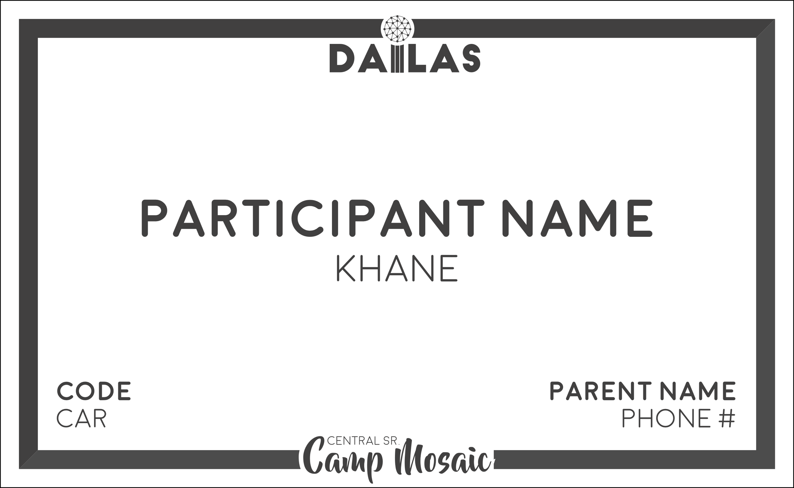

Overview
Designed a child-friendly badge system that communicated identity, location, transportation, allergy details, and emergency contacts.
Roles
Information Coordinator
Graphic Designer
Timeline
June 2017 to August 2017

As the Information Coordinator for Camp Mosaic, my responsibilities spanned from taking attendance to managing our database. In past years, attendance was run on paper, ensuring that a human was always in charge of the presence of participants and their whereabouts. However, this wasn’t effective once the camp grew to over 100 participants separated out over two buildings.
Camp Mosaic is magical. In fact, transporting participants to a land where elephants can live in shoes and snaps are a language was part of what made the camp grow so exponentially. But in order to be believable, those in charge participants, group counselors, should always be with their participants. However, in the morning, during attendance, they are pulled out for 5 to 10 minutes to communicate vital information.
With phones resting in each and every counselor’s pockets, the internet was an accessible tool that could be easily utilized in this situation. To start, I created Google Forms for each counselor’s group of participants as well as for our staff. These forms served as an easier form of attendance. Each group counselor (or me, for staff attendance) would only have to navigate to their personal form URL and mark who was absent.
In past years, counselors might have had a badge with a name and the back of the plastic cover would be a list of participants along with details about allergies, transportation, and emergency contacts; but this information was unorganized and confusing. Badges also became exclusive, with participants trying to grab and stealing them. What if I redesigned badges that could solve the problem of attendance and information organization at the same time?
Counselor Badges
While I wasn’t a counselor, badges all had similar layouts. Names first, positions second, then a big old symbol for first aid in case of emergency. After I had met the details from the old badges, I began to think about the attendance. Forcing counselors to bookmark or type a link in the morning wasn’t efficient and might have taken longer than the original method, even with link shorteners. QR codes provided a quick and symbolic way with a small learning curve. The whitespace present on previous badges was used to house the QR code prominently and easily for quick morning scans. Lastly, we color-coded the badges depending on the hierarchy of position.
Participant Badges
But there was still a lot of data left to distribute. We had to convey allergies, transportation methods, and emergency contacts to counselors. With participants still nabbing at counselor badges, I just gave them badges for themselves. Simply having counselors collecting their participants’ badges at the end of the day minimized replacements and solved a huge problem.

The badges were printed and distributed to counselors on the first day. Initially, we had some issues adjusting to the exact interfaces that the counselors would access. However, by the second day of camp, the manual 15-minute attendance took less than 5 minutes. By the last day of camp, attendance was completed within 2 minutes. Less than five badges had to be replaced due to counselors forgetting to collect them or damage during water activties. This process has been adopted by the Central Camp Mosaic region and will expand in the future to other regions.